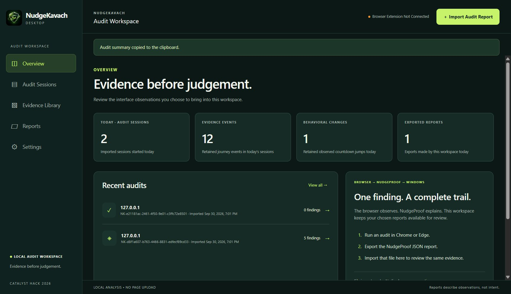

See the Manipulation
Before You Click.
Commercial checkout flows trap shoppers with looping urgency timers, pre-selected add-ons, confirm-shaming, and hidden drip fees. NudgeKavach intercepts deception directly in your browser, generating immutable, auditable NudgeProof evidence cards.
Pre-selected Optional Choice
First observed checked: “Optional 2-Year Damage Protection”. No user interaction observed since baseline.
Rule: Non-required optional checkbox checked at first encounter.
The 5 Core Deceptive Patterns We Expose
Test each pattern live below. Click the interactive controls inside each card to see how NudgeKavach evaluates and neutralizes real-world manipulation.
Pre-selected Optional Purchases
Sneaks add-on warranties, subscriptions, or tips into checkout by having them checked by default when you arrive.
Visible optional checkbox checked without prior user interaction.
Confirm-Shaming / Guilt Buttons
Decline buttons framed with self-deprecation or guilt (e.g., "I love paying full price") to coerce opt-ins.
Choice matches guilt phrases, negative self-description, or refusal of discounts.
Fake Urgency & Countdown Resets
Timers claiming an offer is expiring, but once they tick down, secretly reset back to create artificial pressure.
Countdown increases by >2s after 2+ descending samples in an urgency context.
Late-Visible / Drip Fees
Platform, convenience, or service charges concealed during browsing that appear unexpectedly at final payment.
Monetary fee visible that was absent from initial visible fee baseline.
Asymmetric Choice Prominence
Cookie banners where "Accept All" is massive and vibrant while "Reject" is tiny, transparent, or low-contrast.
Accept area ≥2.5× Reject, font ≥1.5×, or Reject has diminished opacity (≤0.5).
Interactive Dark Pattern Simulator
Toggle manipulative patterns below and watch NudgeKavach's real-time observation engine intercept and outline deceptive elements.
How to Install NudgeKavach in Chrome
NudgeKavach runs locally without Chrome Web Store telemetry. Load the unpacked extension directly from this repository in 4 simple steps.
Open Extensions Page
Type or paste this system URL into your Chrome address bar and press Enter:
Shortcut: Chrome Menu → Extensions → Manage ExtensionsEnable Developer Mode
In the top-right corner, flip the Developer mode switch to ON:
Click "Load Unpacked"
Click the Load unpacked button in the top toolbar and select this folder:
NudgeKavach/extension
Audit Any Page!
Reload any page or the demo store. The green launcher drawer will appear automatically:
Why Client-Side V8 Execution Beats Cloud LLMs
Real dark pattern interception requires sub-10ms synchronous DOM observation, zero network egress, and auditable proof. Here is how our architecture isolates your data compared to cloud extensions.
| Resource / Thread | Type | Status | Transferred | Waterfall / Latency Timeline |
|---|---|---|---|---|
| 🔴 mutation_observer.js content_scripts/content.js | V8 Microtask | In-Memory | 0 B | |
| 🔴 rules.js · parseUrgency() extension/rules.js | Pure Logic | In-Memory | 0 B | |
| 🔴 shadow_root_drawer.js element.attachShadow({mode:'closed'}) | Shadow DOM | Local Tab | 0 B |
Air-Gapped Desktop Forensics for NudgeProof Audits
An offline Electron audit workspace engineered for regulators, compliance teams, and digital trust auditors. Review captured tamper-evident DOM findings, run controlled session comparisons, and store up to 40 sessions with zero telemetry.

Air-Gapped NudgeProof Handoff
Explicit JSON import keeps browser auditing completely decoupled. No background cloud sync or outbound sockets.
Controlled Side-by-Side Comparison
Select any Pattern Mode and Clean Control session pair to evaluate baseline disparities without subjective bias.
Forensic Session Vault
Persists up to 40 sessions in sandboxed local app data with tamper detection, finding IDs, and timeline playback.
npm run desktop:devnpm run desktop:build